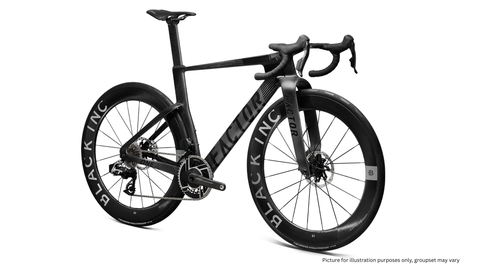
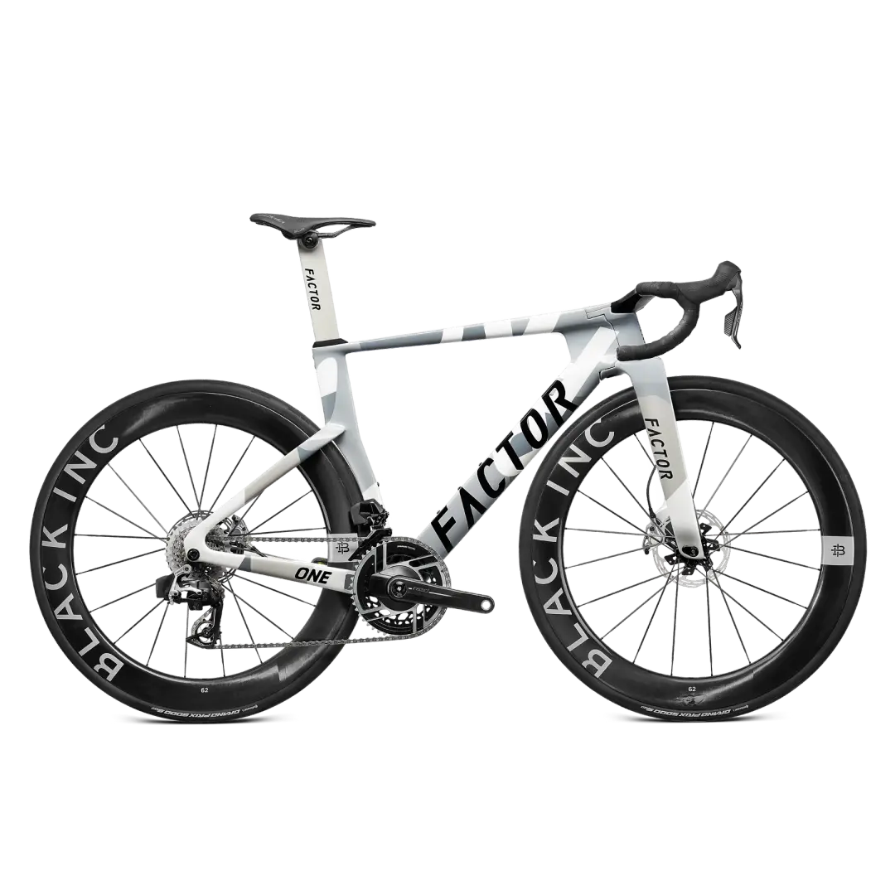
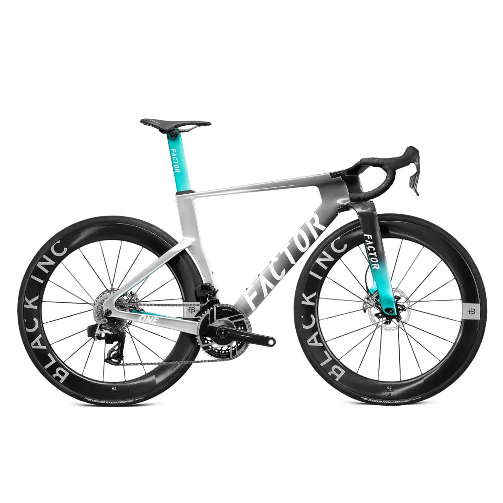

Arrasto Invisível
Cada rajada de vento lateral contra um quadro convencional atua como um freio invisível. Você pedala mais forte e vai mais devagar.
Factor ONE® Aero
Domine as estradas com a Factor ONE® SRAM RED eTap AXS Power Meter. Aerodinâmica radical e precisão absoluta.
Garantir Minha Factor ONETelemetry
Desempenho comprovado cientificamente sob todas as métricas críticas de corrida.
12x
sem juros
3d
prazo entrega
62mm
perfil rodas
100%
eletrônico sem fio
O Problema
No ciclismo de alta performance, a diferença entre quebrar o seu recorde ou estagnar não está nas suas pernas — está na eficiência mecânica e aerodinâmica do seu equipamento.
Cada rajada de vento lateral contra um quadro convencional atua como um freio invisível. Você pedala mais forte e vai mais devagar.
Cada troca de marcha mecânica imprecisa rouba seu momento e interrompe sua cadência ideal precisamente quando você mais precisa.
Treinar sem monitoramento de potência é como pilotar um carro de F1 sem painel. Você está apenas adivinhando o seu esforço.
A Solução
A Factor ONE não é apenas uma bicicleta de estrada; é um instrumento científico de velocidade. Seu design agressivo quebra as regras convencionais com o tubo inferior dividido Twin Vane Evo.
SRAM RED eTap AXS 12v com trocas precisas e milimétricas mesmo sob carga máxima.
Monitore seus watts com precisão laboratorial direta no pedivela. Compatível ANT+ e Bluetooth.
Fluxo de ar otimizado através do chassi para arrasto aerodinâmico mínimo, testado em túnel de vento.
Perfil aero alto para máxima manutenção de velocidade em retas e planos. Leveza extrema.
Modulação perfeita e parada imediata em qualquer condição climática ou descida sinuosa.

Benefícios
Cada componente foi selecionado para eliminar as limitações que separam os atletas de elite dos competidores comuns.
O design aerodinâmico avançado permite sustentar médias horárias superiores com a mesma frequência cardíaca. Menos arrasto = mais velocidade com o mesmo esforço.
Ajuste sua estratégia de ritmo em treinos longos e subidas usando dados em tempo real da SRAM RED, evitando fadiga precoce e maximizando cada joule de energia.
O movimento central e o triângulo traseiro superdimensionados garantem que 100% da força que você aplica no pedal vire tração na roda traseira. Zero energia desperdiçada.
Quadro em carbono premium com garantia oficial do fabricante. Suporte pós-venda completo para peças e componentes do ecossistema SRAM AXS. Nota Fiscal inclusa.
Componentes
Cada detalhe foi pensado para maximizar sua performance. Veja o que está incluso no setup completo.
| Diferencial | Detalhe Técnico | Seu Benefício |
|---|---|---|
|
Componentes Black Inc
|
Cockpit integrado e rodas em fibra de carbono premium. Perfil 62mm de alto desempenho aerodinâmico. | Aerodinâmica de Fábrica |
|
SRAM RED eTap AXS
|
O grupo eletrônico sem fio mais leve e moderno do mundo. 12 velocidades com sincronização automática. | Trocas Infalíveis |
|
Entrega Expressa
|
Envio ultra rápido em até 3 dias úteis via transportadora especializada com seguro total de carga. | Sem Esperas Longas |
|
Condição de Pagamento
|
Parcelamento facilitado em até 12x Sem Juros no cartão de crédito com NF-e emitida no ato. | Fluxo de Caixa Protegido |
|
Power Meter Incluso
|
Medidor de potência SRAM RED já instalado e calibrado. Compatível ANT+ e Bluetooth com qualquer ciclocomputador. | Dados em Tempo Real |



FAQ
Tudo o que você precisa saber antes de garantir a sua Factor ONE.
Estoque Limitado — Últimas Unidades
A Factor ONE SRAM RED eTap AXS com Power Meter e rodas Black Inc Carbon está pronta para entrega. Não deixe para amanhã a decisão que vai transformar seus treinos e competições.
Depoimentos
O que dizem os ciclistas de elite
Empresários, triatletas e entusiastas de alto nível que já fazem parte do ecossistema Factor ONE.